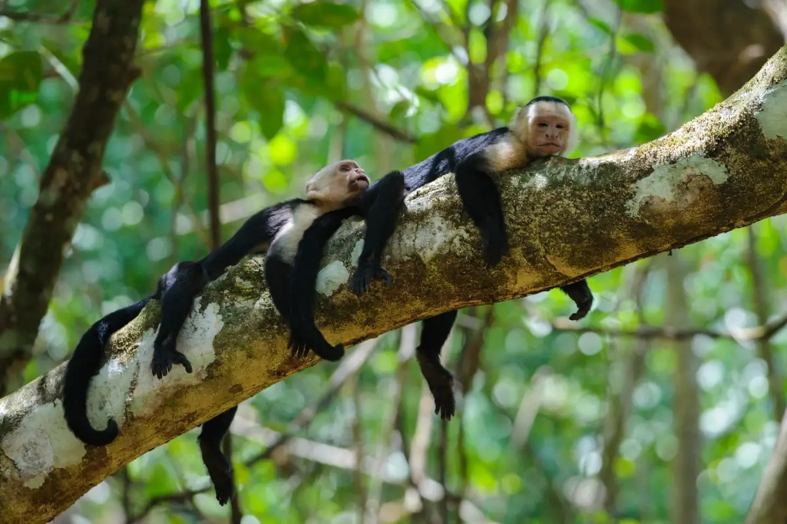

Environmental Education
Strengthening local leadership, children's awareness, and community stewardship through hands-on education programs in rural schools.
Visit program
Four interconnected pillars, one conservation system. Each program addresses a different layer of the same mission: protect ecosystems, educate communities, and create durable outcomes for nature and people.
Strengthening local leadership, children's awareness, and community stewardship through hands-on education programs in rural schools.
Visit program
Reforestation, ecological monitoring, and community-based habitat recovery in the Osa Peninsula and surrounding conservation areas.
Visit program
Protection and relocation of nests along key nesting beaches in Costa Rica's Pacific coast, ensuring safe passage for hatchlings to the sea.
Visit program
Strengthening Corcovado National Park through infrastructure improvements, ranger support, and visitor education programs.
Visit programEach program is part of a larger conservation ecosystem. Discover how they work together to protect Corcovado.
Your contribution makes these programs possible. Every donation directly funds conservation, education, and community development in the Osa Peninsula.